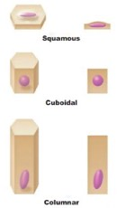
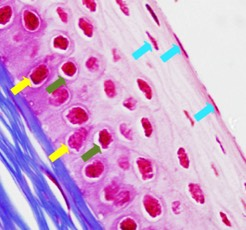
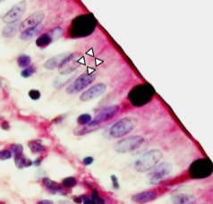

Bepaal de vorm van de cellen:
F) Bestudeer nu de vorm van de cellen, we kunnen hier een onderscheid maken tussen plaveiselcellen, kubische cellen en cilindrische cellen. Voor een goede beoordeling zoek je opnieuw de basaalmembraan. Hier zoek je naar een plaats waar het epitheel loodrecht aangesneden is ten opzichte van de basaalmembraan. Alle kernen liggen dan netjes in rij(en) naast elkaar. Zoek een plaats waar de kernen (dus cellen) netjes in (een) rij(en) naast elkaar liggen.
G) Bepaal nu de vorm van de cellen op basis van onderstaand schema. De rechterkant geeft de overlangse doorsnede van de cel weer. Kijk eerst na of je celomlijningen (= een celmembraan) ziet. Indien dit niet het geval is, kan je de vorm van de cel afleiden uit de vorm van de kern.
- Langwerpige kernen met de lengteas evenwijdig met de basale membraan (= platte kernen): plaveiselcellen (= squamous)
b Ronde kernen: kubische cellen (=cuboidal)
c Langwerpige kernen met de lengteas loodrecht op de basale membraan (= ovale kernen): cilindrische cellen (=columnar)



Hier zien we de celmembraan meestal niet duidelijk. De kernen in de onderste cellaag (gele pijltjes) zijn eerder ovaal, meer naar boven liggende cellagen hebben rondere kernen (groene pijltjes). Nog meer naar de buitenwereld toe (= oppervlakkige laag) krijgen we plaveiselcellen (blauwe pijltjes). We hebben een meerlagig plaveiselepitheel. Bij meerlagige epithelen bepaalt de meest oppervlakkige laag de naam van het epitheel.
We zien de celmembraan (pijlpuntjes). Bovendien hebben de kernen een ovale vorm. We hebben dus cilindrische cellen. Ze vormen een éénlagig cilindrisch epitheel.
Vordering zelfstudie bedekkende epithelen: